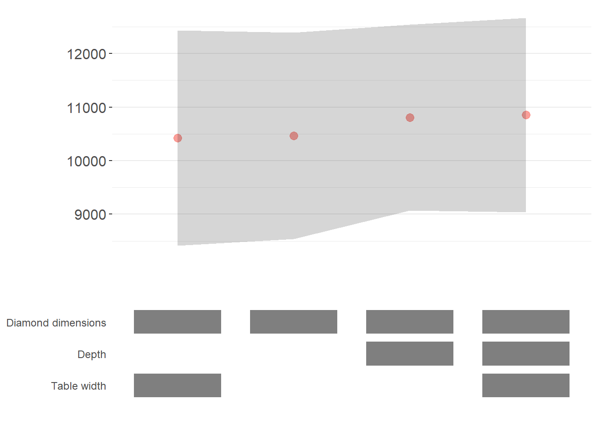

27.1 Specification curve
- also known as Specification robustness graph or coefficient stability plot
Resources
27.1.1 starbility
- Recommend
Installation
devtools::install_github('https://github.com/AakaashRao/starbility')
library(starbility)Example by the package’s author
library(tidyverse)
library(starbility)
library(lfe)
data("diamonds")
set.seed(43)
indices = sample(1:nrow(diamonds),
replace = F,
size = round(nrow(diamonds) / 20))
diamonds = diamonds[indices, ]Plot different combinations of controls
# If you want to make the diamond dimensions as base control
base_controls = c(
'Diamond dimensions' = 'x + y + z' # include all variables under 1 dimension
)
perm_controls = c(
'Depth' = 'depth',
'Table width' = 'table'
)
nonperm_fe_controls = c(
'Clarity FE (granular)' = 'clarity',
'Clarity FE (binary)' = 'high_clarity'
)
# Adding fixed effects
nonperm_fe_controls = c(
'Clarity FE (granular)' = 'clarity',
'Clarity FE (binary)' = 'high_clarity'
)
# Adding instrumental variables
instruments = 'x+y+z'
# clustering and weights
diamonds$sample_weights = runif(n = nrow(diamonds))
# robust standard errors
starb_felm_custom = function(spec, data, rhs, ...) {
spec = as.formula(spec)
model = lfe::felm(spec, data=data) %>% broom::tidy()
row = which(model$term==rhs)
coef = model[row, 'estimate'] %>% as.numeric()
se = model[row, 'std.error'] %>% as.numeric()
p = model[row, 'p.value'] %>% as.numeric()
# 99% confidence interval
z = qnorm(0.995)
# one-tailed test
return(c(coef, p/2, coef+z*se, coef-z*se))
}
plots = stability_plot(
data = diamonds,
lhs = 'price',
rhs = 'carat',
error_geom = 'ribbon', # make the plot more aesthetics
# error_geom = 'none', # if you don't want ribbon (i.e., error bar)
model = starb_felm_custom,
cluster = 'cut',
weights = 'sample_weights',
# iv = instruments,
perm = perm_controls,
base = base_controls,
# perm_fe = perm_fe_controls,
# nonperm_fe = nonperm_fe_controls, # if you want to include fixed effects sequentially (not all combinations) (e.g., you want to test country or state fixed effect, not both )
# fe_always = F, # if you want to have a model without any Fixed Effects
sort = "asc-by-fe", # sort "asc", "desc", or by fixed effects: "asc-by-fe" or "desc-by-fe"
# if you have less variables and want more aesthetics
# control_geom = 'circle',
# point_size = 2,
# control_spacing = 0.3,
# error_alpha = 0.2, # change alpha of the error geom
# point_size = 1.5, # change the size of the coefficient points
# control_text_size = 10, # change the size of the control labels
# coef_ylim = c(-5000, 35000), # change the endpoints of the y-axis
# trip_top = 3, # change the spacing between the two panels
rel_height = 0.6
)
plots
# add comments
# replacement_coef_panel = plots[[1]] +
# scale_y_reverse() +
# theme(panel.grid.minor = element_blank()) +
# geom_vline(xintercept = 41, linetype = 'dashed', alpha = 0.4) +
# annotate(geom = 'label', x = 52, y = 30000, label = 'What a great\nspecification!', alpha = 0.75)
#
# combine_plots(replacement_coef_panel,
# plots[[2]],
# rel_height = 0.6)Note:
- \(p < 0.01\): red
- \(p < 0.05\): green
- \(p < 0.1\): blue
- \(p > 0.1\): black
# Step 1: Control Grid
diamonds$high_clarity = diamonds$clarity %in% c('VS1','VVS2','VVS1','IF')
base_controls = c(
'Diamond dimensions' = 'x + y + z'
)
perm_controls = c(
'Depth' = 'depth',
'Table width' = 'table'
)
perm_fe_controls = c(
'Cut FE' = 'cut',
'Color FE' = 'color'
)
nonperm_fe_controls = c(
'Clarity FE (granular)' = 'clarity',
'Clarity FE (binary)' = 'high_clarity'
)
grid1 = stability_plot(data = diamonds,
lhs = 'price',
rhs = 'carat',
perm = perm_controls,
base = base_controls,
perm_fe = perm_fe_controls,
nonperm_fe = nonperm_fe_controls,
run_to=2)
knitr::kable(grid1 %>% head(10))| Diamond dimensions | Depth | Table width | Cut FE | Color FE | np_fe |
|---|---|---|---|---|---|
| 1 | 0 | 0 | 0 | 0 | |
| 1 | 1 | 0 | 0 | 0 | |
| 1 | 0 | 1 | 0 | 0 | |
| 1 | 1 | 1 | 0 | 0 | |
| 1 | 0 | 0 | 1 | 0 | |
| 1 | 1 | 0 | 1 | 0 | |
| 1 | 0 | 1 | 1 | 0 | |
| 1 | 1 | 1 | 1 | 0 | |
| 1 | 0 | 0 | 0 | 1 | |
| 1 | 1 | 0 | 0 | 1 |
# Step 2: Get model expression
grid2 = stability_plot(grid = grid1,
data=diamonds,
lhs='price',
rhs='carat',
perm=perm_controls,
base=base_controls,
run_from=2,
run_to=3)
knitr::kable(grid2 %>% head(10))| Diamond dimensions | Depth | Table width | np_fe | expr |
|---|---|---|---|---|
| 1 | 0 | 0 | 0 | price~carat+x+y+z|0|0|0 |
| 1 | 1 | 0 | 0 | price~carat+x+y+z+depth|0|0|0 |
| 1 | 0 | 1 | 0 | price~carat+x+y+z+table|0|0|0 |
| 1 | 1 | 1 | 0 | price~carat+x+y+z+depth+table|0|0|0 |
| 1 | 0 | 0 | 0 | price~carat+x+y+z|0|0|0 |
| 1 | 1 | 0 | 0 | price~carat+x+y+z+depth|0|0|0 |
| 1 | 0 | 1 | 0 | price~carat+x+y+z+table|0|0|0 |
| 1 | 1 | 1 | 0 | price~carat+x+y+z+depth+table|0|0|0 |
| 1 | 0 | 0 | 0 | price~carat+x+y+z|0|0|0 |
| 1 | 1 | 0 | 0 | price~carat+x+y+z+depth|0|0|0 |
# Step 3: Estimate models
grid3 = stability_plot(grid = grid2,
data=diamonds,
lhs='price',
rhs='carat',
perm=perm_controls,
base=base_controls,
run_from=3,
run_to=4)
knitr::kable(grid3 %>% head(10))| Diamond dimensions | Depth | Table width | np_fe | expr | coef | p | error_high | error_low |
|---|---|---|---|---|---|---|---|---|
| 1 | 0 | 0 | 0 | price~carat+x+y+z|0|0|0 | 10461.86 | p<0.01 | 11031.84 | 9891.876 |
| 1 | 1 | 0 | 0 | price~carat+x+y+z+depth|0|0|0 | 10808.25 | p<0.01 | 11388.81 | 10227.683 |
| 1 | 0 | 1 | 0 | price~carat+x+y+z+table|0|0|0 | 10423.42 | p<0.01 | 10992.00 | 9854.849 |
| 1 | 1 | 1 | 0 | price~carat+x+y+z+depth+table|0|0|0 | 10851.31 | p<0.01 | 11428.58 | 10274.037 |
| 1 | 0 | 0 | 0 | price~carat+x+y+z|0|0|0 | 10461.86 | p<0.01 | 11031.84 | 9891.876 |
| 1 | 1 | 0 | 0 | price~carat+x+y+z+depth|0|0|0 | 10808.25 | p<0.01 | 11388.81 | 10227.683 |
| 1 | 0 | 1 | 0 | price~carat+x+y+z+table|0|0|0 | 10423.42 | p<0.01 | 10992.00 | 9854.849 |
| 1 | 1 | 1 | 0 | price~carat+x+y+z+depth+table|0|0|0 | 10851.31 | p<0.01 | 11428.58 | 10274.037 |
| 1 | 0 | 0 | 0 | price~carat+x+y+z|0|0|0 | 10461.86 | p<0.01 | 11031.84 | 9891.876 |
| 1 | 1 | 0 | 0 | price~carat+x+y+z+depth|0|0|0 | 10808.25 | p<0.01 | 11388.81 | 10227.683 |
# Step 4: Get dataframe to draw
dfs = stability_plot(grid = grid3,
data=diamonds,
lhs='price',
rhs='carat',
perm=perm_controls,
base=base_controls,
run_from=4,
run_to=5)
coef_grid = dfs[[1]]
control_grid = dfs[[2]]
knitr::kable(coef_grid %>% head(10))| Diamond dimensions | Depth | Table width | np_fe | expr | coef | p | error_high | error_low | model |
|---|---|---|---|---|---|---|---|---|---|
| 1 | 0 | 0 | 0 | price~carat+x+y+z|0|0|0 | 10461.86 | p<0.01 | 11031.84 | 9891.876 | 1 |
| 1 | 1 | 0 | 0 | price~carat+x+y+z+depth|0|0|0 | 10808.25 | p<0.01 | 11388.81 | 10227.683 | 2 |
| 1 | 0 | 1 | 0 | price~carat+x+y+z+table|0|0|0 | 10423.42 | p<0.01 | 10992.00 | 9854.849 | 3 |
| 1 | 1 | 1 | 0 | price~carat+x+y+z+depth+table|0|0|0 | 10851.31 | p<0.01 | 11428.58 | 10274.037 | 4 |
| 1 | 0 | 0 | 0 | price~carat+x+y+z|0|0|0 | 10461.86 | p<0.01 | 11031.84 | 9891.876 | 5 |
| 1 | 1 | 0 | 0 | price~carat+x+y+z+depth|0|0|0 | 10808.25 | p<0.01 | 11388.81 | 10227.683 | 6 |
| 1 | 0 | 1 | 0 | price~carat+x+y+z+table|0|0|0 | 10423.42 | p<0.01 | 10992.00 | 9854.849 | 7 |
| 1 | 1 | 1 | 0 | price~carat+x+y+z+depth+table|0|0|0 | 10851.31 | p<0.01 | 11428.58 | 10274.037 | 8 |
| 1 | 0 | 0 | 0 | price~carat+x+y+z|0|0|0 | 10461.86 | p<0.01 | 11031.84 | 9891.876 | 9 |
| 1 | 1 | 0 | 0 | price~carat+x+y+z+depth|0|0|0 | 10808.25 | p<0.01 | 11388.81 | 10227.683 | 10 |
# Step 5: plot the sensitivity graph
panels = stability_plot(data = diamonds,
lhs='price',
rhs='carat',
coef_grid = coef_grid,
control_grid = control_grid,
run_from=5,
run_to=6)
stability_plot(data = diamonds,
lhs='price',
rhs='carat',
coef_panel = panels[[1]],
control_panel = panels[[2]],
run_from = 6,
run_to = 7)
In step 2, we can modify to use other function (e.g., glm)
diamonds$above_med_price = as.numeric(diamonds$price > median(diamonds$price))
base_controls = c('Diamond dimensions' = 'x + y + z')
perm_controls = c('Depth' = 'depth',
'Table width' = 'table',
'Clarity' = 'clarity')
lhs_var = 'above_med_price'
rhs_var = 'carat'
grid1 = stability_plot(
data = diamonds,
lhs = lhs_var,
rhs = rhs_var,
perm = perm_controls,
base = base_controls,
fe_always = F,
run_to = 2
)
# Create control part of formula
base_perm = c(base_controls, perm_controls)
grid1$expr = apply(grid1[, 1:length(base_perm)], 1,
function(x)
paste(base_perm[names(base_perm)[which(x == 1)]], collapse = '+'))
# Complete formula with LHS and RHS variables
grid1$expr = paste(lhs_var, '~', rhs_var, '+', grid1$expr, sep = '')
knitr::kable(grid1 %>% head(10))| Diamond dimensions | Depth | Table width | Clarity | np_fe | expr |
|---|---|---|---|---|---|
| 1 | 0 | 0 | 0 | above_med_price~carat+x + y + z | |
| 1 | 1 | 0 | 0 | above_med_price~carat+x + y + z+depth | |
| 1 | 0 | 1 | 0 | above_med_price~carat+x + y + z+table | |
| 1 | 1 | 1 | 0 | above_med_price~carat+x + y + z+depth+table | |
| 1 | 0 | 0 | 1 | above_med_price~carat+x + y + z+clarity | |
| 1 | 1 | 0 | 1 | above_med_price~carat+x + y + z+depth+clarity | |
| 1 | 0 | 1 | 1 | above_med_price~carat+x + y + z+table+clarity | |
| 1 | 1 | 1 | 1 | above_med_price~carat+x + y + z+depth+table+clarity |
# customer function for the logit model
starb_logit = function(spec, data, rhs, ...) {
spec = as.formula(spec)
model = glm(spec, data=data, family='binomial', weights=data$weight) %>%
broom::tidy()
row = which(model$term==rhs)
coef = model[row, 'estimate'] %>% as.numeric()
se = model[row, 'std.error'] %>% as.numeric()
p = model[row, 'p.value'] %>% as.numeric()
return(c(coef, p, coef+1.96*se, coef-1.96*se))
}
stability_plot(grid = grid1,
data = diamonds,
lhs = lhs_var,
rhs = rhs_var,
model = starb_logit,
perm = perm_controls,
base = base_controls,
fe_always = F,
run_from=3)
For getting other specification (e.g., different CI)
library(margins)
starb_logit_enhanced = function(spec, data, rhs, ...) {
# Unpack ...
l = list(...)
get_mfx = ifelse(is.null(l$get_mfx), F, T) # Set a default to F
spec = as.formula(spec)
if (get_mfx) {
model = glm(spec, data=data, family='binomial', weights=data$weight) %>%
margins() %>%
summary
row = which(model$factor==rhs)
coef = model[row, 'AME'] %>% as.numeric()
se = model[row, 'SE'] %>% as.numeric()
p = model[row, 'p'] %>% as.numeric()
} else {
model = glm(spec, data=data, family='binomial', weights=data$weight) %>%
broom::tidy()
row = which(model$term==rhs)
coef = model[row, 'estimate'] %>% as.numeric()
se = model[row, 'std.error'] %>% as.numeric()
p = model[row, 'p.value'] %>% as.numeric()
}
z = qnorm(0.995)
return(c(coef, p, coef+z*se, coef-z*se))
}
stability_plot(grid = grid1,
data = diamonds,
lhs = lhs_var,
rhs = rhs_var,
model = starb_logit_enhanced,
get_mfx = T,
perm = perm_controls,
base = base_controls,
fe_always = F,
run_from = 3)
To get your customized plot
dfs = stability_plot(grid = grid1,
data = diamonds,
lhs = lhs_var,
rhs = rhs_var,
model = starb_logit_enhanced,
get_mfx = T,
perm = perm_controls,
base = base_controls,
fe_always = F,
run_from = 3,
run_to = 5)
coef_grid_logit = dfs[[1]]
control_grid_logit = dfs[[2]]
min_space = 0.5
coef_plot = ggplot2::ggplot(coef_grid_logit, aes(x = model, y = coef, shape=p, group=p)) +
geom_linerange(aes(ymin = error_low, ymax = error_high), alpha=0.75) +
geom_point(size=5, aes(col=p, fill=p), alpha=1) +
viridis::scale_color_viridis(discrete = TRUE, option = "D")+
scale_shape_manual(values = c(15,17,18, 19)) +
theme_classic() +
geom_hline(yintercept=0, linetype='dotted') +
ggtitle('A custom coefficient stability plot!') +
labs(subtitle="Error bars represent 99% confidence intervals") +
theme(axis.text.x = element_blank(),
axis.title = element_blank(),
axis.ticks.x = element_blank()) +
coord_cartesian(xlim=c(1-min_space, max(coef_grid_logit$model)+min_space),
ylim=c(-0.1, 1.6)) +
guides(fill=F, shape=F, col=F)
control_plot = ggplot(control_grid_logit) +
geom_point(aes(x = model, y = y, fill=value), shape=23, size=4) +
scale_fill_manual(values=c('#FFFFFF', '#000000')) +
guides(fill=F) +
scale_y_continuous(breaks = unique(control_grid_logit$y),
labels = unique(control_grid_logit$key),
limits=c(min(control_grid_logit$y)-1, max(control_grid_logit$y)+1)) +
scale_x_continuous(breaks=c(1:max(control_grid_logit$model))) +
coord_cartesian(xlim=c(1-min_space, max(control_grid_logit$model)+min_space)) +
theme_classic() +
theme(panel.grid.major.y = element_blank(),
panel.grid.minor.y = element_blank(),
axis.title = element_blank(),
axis.text.y = element_text(size=10),
axis.ticks = element_blank(),
axis.line = element_blank())
cowplot::plot_grid(coef_plot, control_plot, rel_heights=c(1,0.5),
align='v', ncol=1, axis='b')
To get different model specification (e.g., probit vs. logit)
starb_probit = function(spec, data, rhs, ...) {
# Unpack ...
l = list(...)
get_mfx = ifelse(is.null(l$get_mfx), F, T) # Set a default to F
spec = as.formula(spec)
if (get_mfx) {
model = glm(
spec,
data = data,
family = binomial(link = 'probit'),
weights = data$weight
) %>%
margins() %>%
summary
row = which(model$factor == rhs)
coef = model[row, 'AME'] %>% as.numeric()
se = model[row, 'SE'] %>% as.numeric()
p = model[row, 'p'] %>% as.numeric()
} else {
model = glm(
spec,
data = data,
family = binomial(link = 'probit'),
weights = data$weight
) %>%
broom::tidy()
row = which(model$term == rhs)
coef = model[row, 'estimate'] %>% as.numeric()
se = model[row, 'std.error'] %>% as.numeric()
p = model[row, 'p.value'] %>% as.numeric()
}
z = qnorm(0.995)
return(c(coef, p, coef + z * se, coef - z * se))
}
probit_dfs = stability_plot(
grid = grid1,
data = diamonds,
lhs = lhs_var,
rhs = rhs_var,
model = starb_probit,
get_mfx = T,
perm = perm_controls,
base = base_controls,
fe_always = F,
run_from = 3,
run_to = 5
)
# We'll put the probit DFs on the left, so we need to adjust the model numbers accordingly
# so the probit and logit DFs don't plot on top of one another!
coef_grid_probit = probit_dfs[[1]] %>%
mutate(model = model + max(coef_grid_logit$model))
control_grid_probit = probit_dfs[[2]] %>%
mutate(model = model + max(control_grid_logit$model))
coef_grid = bind_rows(coef_grid_logit, coef_grid_probit)
control_grid = bind_rows(control_grid_logit, control_grid_probit)
panels = stability_plot(
coef_grid = coef_grid,
control_grid = control_grid,
data = diamonds,
lhs = lhs_var,
rhs = rhs_var,
perm = perm_controls,
base = base_controls,
fe_always = F,
run_from = 5,
run_to = 6
)
coef_plot = panels[[1]] + geom_vline(xintercept = 8.5,
linetype = 'dashed',
alpha = 0.8) +
annotate(
geom = 'label',
x = 4.25,
y = 1.8,
label = 'Logit models',
size = 6,
fill = '#D3D3D3',
alpha = 0.7
) +
annotate(
geom = 'label',
x = 12.75,
y = 1.8,
label = 'Probit models',
size = 6,
fill = '#D3D3D3',
alpha = 0.7
) +
coord_cartesian(ylim = c(-0.5, 1.9))
control_plot = panels[[2]] + geom_vline(xintercept = 8.5,
linetype = 'dashed',
alpha = 0.8)
cowplot::plot_grid(
coef_plot,
control_plot,
rel_heights = c(1, 0.5),
align = 'v',
ncol = 1,
axis = 'b'
)
27.1.2 rdfanalysis
- Not recommend
Installation
devtools::install_github("joachim-gassen/rdfanalysis")Example by the package’s author
library(rdfanalysis)
load(url("https://joachim-gassen.github.io/data/rdf_ests.RData"))
plot_rdf_spec_curve(ests, "est", "lb", "ub") 
Shiny app for readers to explore
design <- define_design(steps = c("read_data",
"select_idvs",
"treat_extreme_obs",
"specify_model",
"est_model"),
rel_dir = "vignettes/case_study_code")
shiny_rdf_spec_curve(ests, list("est", "lb", "ub"),
design, "vignettes/case_study_code",
"https://joachim-gassen.github.io/data/wb_new.csv")References
Simonsohn, Uri, Joseph P. Simmons, and Leif D. Nelson. 2020. “Specification Curve Analysis.” Nature Human Behaviour 4 (11): 1208–14. https://doi.org/10.1038/s41562-020-0912-z.